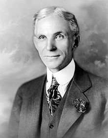

Henry Ford was born July 30, 1863, on a farm in Greenfield Township, Michigan.His father, William Ford (1826–1905), was born in County Cork, Ireland, to a family that was originally from Somerset, England, His mother, Mary Ford (née Litogot; 1839–1876), was born in Michigan as the youngest child of Belgian immigrants; her parents died when she was a child and she was adopted by neighbors, the O'Herns. Henry Ford's siblings were Margaret Ford (1867–1938); Jane Ford (c. 1868–1945); William Ford (1871–1917) and Robert Ford (1873–1934).
His father gave him a pocket watch in his early teens. At 15, Ford dismantled and reassembled the timepieces of friends and neighbors dozens of times, gaining the reputation of a watch repairman.At twenty, Ford walked four miles to their Episcopal church every Sunday.
Ford was devastated when his mother died in 1876. His father expected him to eventually take over the family farm, but he despised farm work. He later wrote, "I never had any particular love for the farm—it was the mother on the farm I loved."
In 1879, Ford left home to work as an apprentice machinist in Detroit, first with James F. Flower & Bros., and later with the Detroit Dry Dock Co. In 1882, he returned to Dearborn to work on the family farm, where he became adept at operating the Westinghouse portable steam engine. He was later hired by Westinghouse to service their steam engines. During this period Ford also studied bookkeeping at Goldsmith, Bryant & Stratton Business College in Detroit.
Ford married Clara Jane Bryant (1866–1950) on April 11, 1888 and supported himself by farming and running a sawmill. They had one child: Edsel Ford (1893–1943).
In 1891, Ford became an engineer with the Edison Illuminating Company. After his promotion to Chief Engineer in 1893, he had enough time and money to devote attention to his personal experiments on gasoline engines. These experiments culminated in 1896 with the completion of a self-propelled vehicle which he named the Ford Quadricycle. He test-drove it on June 4. After various test drives, Ford brainstormed ways to improve the Quadricycle.
Also in 1896, Ford attended a meeting of Edison executives, where he was introduced to Thomas Edison. Edison approved of Ford's automobile experimentation. Encouraged by Edison, Ford designed and built a second vehicle, completing it in 1898. Backed by the capital of Detroit lumber baron William H. Murphy, Ford resigned from the Edison Company and founded the Detroit Automobile Company on August 5, 1899. However, the automobiles produced were of a lower quality and higher price than Ford wanted. Ultimately, the company was not successful and was dissolved in January 1901.
With the help of C. Harold Wills, Ford designed, built, and successfully raced a 26-horsepower automobile in October 1901. With this success, Murphy and other stockholders in the Detroit Automobile Company formed the Henry Ford Company on November 30, 1901, with Ford as chief engineer. In 1902, Murphy brought in Henry M. Leland as a consultant; Ford, in response, left the company bearing his name. With Ford gone, Murphy renamed the company the Cadillac Automobile Company.
Teaming up with former racing cyclist Tom Cooper, Ford also produced the 80+ horsepower racer "999" which Barney Oldfield was to drive to victory in a race in October 1902. Ford received the backing of an old acquaintance, Alexander Y. Malcomson, a Detroit-area coal dealer. They formed a partnership, "Ford & Malcomson, Ltd." to manufacture automobiles. Ford went to work designing an inexpensive automobile, and the duo leased a factory and contracted with a machine shop owned by John and Horace E. Dodge to supply over $160,000 in parts.Sales were slow, and a crisis arose when the Dodge brothers demanded payment for their first shipment.